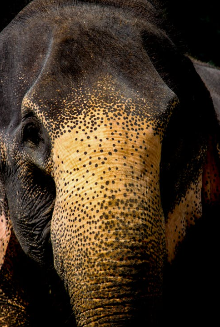

Sri Jayawardenepura Kotte
2.234.289 Resident
Sri Lanka
6° 54' LU, 79° 54' BT
Get More Information
Sri Jayawardenepura Kotte
View all citiesSri Lanka, officially the Democratic Socialist Republic of Sri Lanka, formerly known as Ceylon, is an island country in South Asia. It is located in the Indian Ocean, southwest of the Bay of Bengal, and is separated from India by the Gulf of Mannar and the Palk Strait.
Images Credit
Bandung
Asia Africa
City Network
Quick Link
Get in touch
Need Information?
+62 81318667479
bapperida@bandung.go.id
© BAACN - All rights reserved